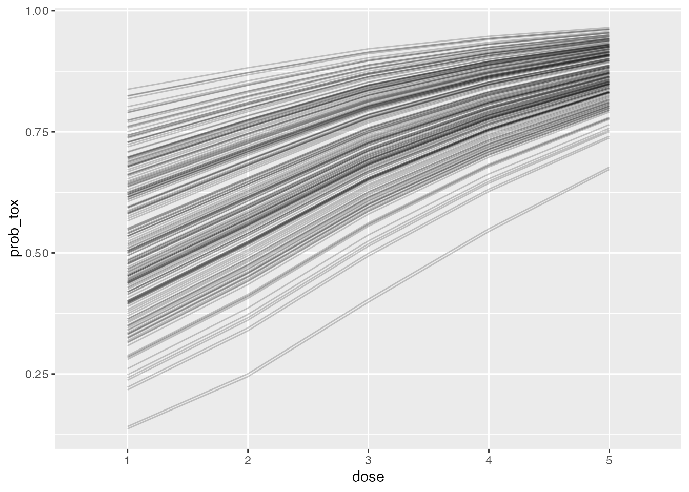

A205-CRM.RmdThe escalation package by Kristian Brock. Documentation
is hosted at https://brockk.github.io/escalation/
The continual reassessment method (CRM) was introduced by O’Quigley, Pepe, and Fisher (1990). It has proved to be a truly seminal dose-finding design, spurring many revisions, variants and imitations.
Pinning a finger on what is the CRM design is complicated because there have been so many versions over the years.
At its simplest, the CRM is a dose-escalation design that seeks a dose with probability of toxicity closest to some pre-specified target toxicity rate, \(p_T\), in an homogeneous patient group. The hallmark that unifies the CRM variants is the assumption that the probability of toxicity, \(p_i\), at the \(i\)th dose, \(x_i\), can be modelled using a smooth mathematical function:
\[ p_i = F(x_i, \theta), \]
where \(\theta\) is a general vector of parameters. Priors are specified on \(\theta\), and the dose with posterior estimate of \(p_i\) closest to \(p_T\) is iteratively recommended to the next patient(s).
Different variants of the CRM use different forms for \(F\). We consider those briefly now.
O’Quigley, Pepe, and Fisher (1990) first introduced the method using
\[ p_i = \left( \frac{\tanh{(x_i)} + 1}{2} \right)^\beta, \]
with an exponential prior was placed on \(\beta\).
\[ \text{logit} p_i = a_0 + \exp{(\beta)} x_i, \]
where \(a_0\) is a pre-specified constant, and \(x_i \in \mathbb{R}\).
\[ \text{logit} p_i = \alpha + \exp{(\beta)} x_i, \] for \(x_i \in \mathbb{R}\).
Other model considerations include:
The \(x_i\) dose variables in the
models above do not reflect the raw dose quantities given to patients.
For example, if the dose is 10mg, we do not use x=10.
Instead, a skeleton containing estimates of the probabilities
of toxicity at the doses is identified. This skeleton could reflect the
investigators’ prior expectations of toxicities at all of the doses; or
it could reflect their expectations for some of the doses with the
others interpolated in some plausible way. The \(x_i\) are then calculated so that the
model-estimated probabilities of toxicity with the parameters taking
their prior mean values match the skeleton. This will be much clearer
with an example.
In a five dose setting, let the skeleton be \(\pi = (0.05, 0.1, 0.2, 0.4, 0.7)\). That is, the investigators believe before the trial commences that the probbaility of toxicity at the second dose is 10%, and so on. Let us assume that we are using a one-parameter logistic model with \(a_0 = 3\) and \(\beta ~ \sim N(0, 1)\). Then we require that
\[ \text{logit} \pi_i = 3 + e^0 x_i = 3 + x_i, \]
i.e.
\[ x_i = \text{logit} \pi_i - 3. \]
This yields the vector of standardised doses \(x = (-5.94, -5.20, -4.39, -3.41, -2.15)\). Equivalent transformations can be derived for the other model forms. The \(x_i\) are then used as covariates in the model-fitting. CRM users specify their skeleton, \(\pi\), and their parameter priors. From these, the software calculates the \(x_i\). The actual doses given to patients in SI units do not actually feature in the model.
escalation
escalation simply aims to give a common interface to
dose-selection models to facilitate a grammar for specifying
dose-finding trial designs. Where possible, it delegates the
mathematical model-fitting to existing R packages. There are several R
packages that implement CRM models. The two used in
escalation are the dfcrm package (Y. K. Cheung 2011; K. Cheung 2013); and the
trialr package (Brock 2019,
2020). They have different strengths and weaknesses, so are
suitable to different scenarios. We discuss those now.
dfcrm
offers:
dfcrm models are fit in escalation using
the get_dfcrm function. Examples are given below.
trialr
offers:
trialr models are fit in escalation using
the get_trialr_crm function.
Let us commence by replicating an example from p.21 of Y. K. Cheung (2011). They choose the following parameters:
Let us define a model fitter using the dfcrm
package:
library(escalation) #> Warning: package 'magrittr' was built under R version 4.0.5 model1 <- get_dfcrm(skeleton = skeleton, target = target, model = 'logistic', intcpt = a0, scale = beta_sd)
and a fitter using the trialr package:
model2 <- get_trialr_crm(skeleton = skeleton, target = target, model = 'logistic', a0 = a0, beta_mean = 0, beta_sd = beta_sd)
Names for the function parameters skeleton,
target, and model are standardised by
escalation because they are fundamental. Further parameters
(i.e. those in the second lines of each of the above examples) are
passed onwards to the model-fitting functions in dfcrm and
trialr. You can see that some of these parameter names vary
between the approaches. E.g., what dfcrm calls the
intcpt, trialr calls a0. Refer to
the documentation of the crm function in dfcrm
and stan_crm in trialr for further
information.
We then fit those models to the notional outcomes described in the source text:
The dose recommended by each of the models for the next patient is:
fit1 %>% recommended_dose() #> [1] 4 fit2 %>% recommended_dose() #> [1] 4
Thankfully, the models agree. They advocate staying at dose 4, wary of the toxicity already seen at dose 5.
If we take a summary of each model fit:
fit1 %>% summary() #> # A tibble: 6 × 9 #> Skeleton dose tox n empiric_tox_rate mean_pr…¹ media…² admis…³ recom…⁴ #> <dbl> <ord> <dbl> <dbl> <dbl> <dbl> <dbl> <lgl> <lgl> #> 1 NA NoDose 0 0 0 0 0 TRUE FALSE #> 2 0.05 1 0 0 NaN 0.00768 0.00768 TRUE FALSE #> 3 0.12 2 0 0 NaN 0.0265 0.0265 TRUE FALSE #> 4 0.25 3 0 2 0 0.0817 0.0817 TRUE FALSE #> 5 0.4 4 0 1 0 0.182 0.182 TRUE TRUE #> 6 0.55 5 1 2 0.5 0.331 0.331 TRUE FALSE #> # … with abbreviated variable names ¹mean_prob_tox, ²median_prob_tox, #> # ³admissible, ⁴recommended
fit2 %>% summary() #> # A tibble: 6 × 9 #> Skeleton dose tox n empiric_tox_rate mean_pr…¹ media…² admis…³ recom…⁴ #> <dbl> <ord> <dbl> <dbl> <dbl> <dbl> <dbl> <lgl> <lgl> #> 1 NA NoDose 0 0 0 0 0 TRUE FALSE #> 2 0.05 1 0 0 NaN 0.0320 0.00733 TRUE FALSE #> 3 0.12 2 0 0 NaN 0.0654 0.0255 TRUE FALSE #> 4 0.25 3 0 2 0 0.130 0.0793 TRUE FALSE #> 5 0.4 4 0 1 0 0.220 0.178 TRUE TRUE #> 6 0.55 5 1 2 0.5 0.340 0.327 TRUE FALSE #> # … with abbreviated variable names ¹mean_prob_tox, ²median_prob_tox, #> # ³admissible, ⁴recommended
We can see that they closely agree on model estimates of the
probability of toxicity at each dose. Note that the median perfectly
matches the mean in the dfcrm fit because it assumes a
normal posterior distribution on \(\beta\). In contrast, the
trialr class uses Stan to fit the model using
Hamiltonian Monte Carlo sampling. The posterior distributions for the
probabilities of toxicity are evidently non-normal and positively-skewed
because the median estimates are less than the mean estimates.
Let us imagine instead that we want to fit the empiric model. That
simply requires we change the model variable and adjust the
prior parameters:
model3 <- get_dfcrm(skeleton = skeleton, target = target, model = 'empiric', scale = beta_sd) model4 <- get_trialr_crm(skeleton = skeleton, target = target, model = 'empiric', beta_sd = beta_sd)
Fitting each to the same set of outcomes yields:
fit3 %>% summary() #> # A tibble: 6 × 9 #> Skeleton dose tox n empiric_tox_rate mean_pr…¹ media…² admis…³ recom…⁴ #> <dbl> <ord> <dbl> <dbl> <dbl> <dbl> <dbl> <lgl> <lgl> #> 1 NA NoDose 0 0 0 0 0 TRUE FALSE #> 2 0.05 1 0 0 NaN 0.00701 0.00701 TRUE FALSE #> 3 0.12 2 0 0 NaN 0.0299 0.0299 TRUE FALSE #> 4 0.25 3 0 2 0 0.101 0.101 TRUE FALSE #> 5 0.4 4 0 1 0 0.219 0.219 TRUE TRUE #> 6 0.55 5 1 2 0.5 0.372 0.372 TRUE FALSE #> # … with abbreviated variable names ¹mean_prob_tox, ²median_prob_tox, #> # ³admissible, ⁴recommended
fit4 %>% summary() #> # A tibble: 6 × 9 #> Skeleton dose tox n empiric_tox_rate mean_pr…¹ media…² admis…³ recom…⁴ #> <dbl> <ord> <dbl> <dbl> <dbl> <dbl> <dbl> <lgl> <lgl> #> 1 NA NoDose 0 0 0 0 0 TRUE FALSE #> 2 0.05 1 0 0 NaN 0.0324 0.00710 TRUE FALSE #> 3 0.12 2 0 0 NaN 0.0683 0.0301 TRUE FALSE #> 4 0.25 3 0 2 0 0.143 0.101 TRUE FALSE #> 5 0.4 4 0 1 0 0.248 0.220 TRUE TRUE #> 6 0.55 5 1 2 0.5 0.379 0.373 TRUE FALSE #> # … with abbreviated variable names ¹mean_prob_tox, ²median_prob_tox, #> # ³admissible, ⁴recommended
In this example, the model estimates are broadly consistent across
methodology and model type. However, this is not the general case. To
illustrate this point, let us examine a two parameter logistic model fit
using trialr (note: this model is not implemented in
dfcrm):
model5 <- get_trialr_crm(skeleton = skeleton, target = target, model = 'logistic2', alpha_mean = 0, alpha_sd = 2, beta_mean = 0, beta_sd = 1) fit5 <- model5 %>% fit(outcomes) fit5 %>% summary() #> # A tibble: 6 × 9 #> Skeleton dose tox n empiric_tox_rate mean_pr…¹ media…² admis…³ recom…⁴ #> <dbl> <ord> <dbl> <dbl> <dbl> <dbl> <dbl> <lgl> <lgl> #> 1 NA NoDose 0 0 0 0 0 TRUE FALSE #> 2 0.05 1 0 0 NaN 0.0369 0.00428 TRUE FALSE #> 3 0.12 2 0 0 NaN 0.0595 0.0169 TRUE FALSE #> 4 0.25 3 0 2 0 0.108 0.0605 TRUE FALSE #> 5 0.4 4 0 1 0 0.202 0.161 TRUE TRUE #> 6 0.55 5 1 2 0.5 0.408 0.385 TRUE FALSE #> # … with abbreviated variable names ¹mean_prob_tox, ²median_prob_tox, #> # ³admissible, ⁴recommended
Now the estimate of toxicity at the highest dose is high relative to the other models. The extra free parameter in the two-parameter model offers more flexibility. There has been a debate in the literature about one-parameter vs two-parameter models (and possibly more). It is generally accepted that a single parameter model is too simplistic to accurately estimate \(p_i\) over the entire dose range. However, it will be sufficient to identify the dose closest to \(p_T\), and if that is the primary objective of the trial, the simplicity of a one-parameter model may be entirely justified. The interested reader is directed to O’Quigley, Pepe, and Fisher (1990) and Neuenschwander, Branson, and Gsponer (2008).
Note that the CRM does not natively implement stopping rules, so these classes on their own will always advocate trial continuance:
and identify each dose as admissible:
fit1 %>% dose_admissible() #> [1] TRUE TRUE TRUE TRUE TRUE
This behaviour can be altered by appending classes to advocate stopping for consensus:
model6 <- get_trialr_crm(skeleton = skeleton, target = 0.3, model = 'empiric', beta_sd = 1) %>% stop_when_n_at_dose(dose = 'recommended', n = 6) fit6 <- model6 %>% fit('2NNN 3TTT 2NTN') fit6 %>% continue() #> [1] FALSE fit6 %>% recommended_dose() #> [1] 2
Or for stopping under excess toxicity:
model7 <- get_trialr_crm(skeleton = skeleton, target = 0.3, model = 'empiric', beta_sd = 1) %>% stop_when_too_toxic(dose = 1, tox_threshold = 0.3, confidence = 0.8) fit7 <- model7 %>% fit('1NTT 1TTN') fit7 %>% continue() #> [1] FALSE fit7 %>% recommended_dose() #> [1] NA fit7 %>% dose_admissible() #> [1] FALSE FALSE FALSE FALSE FALSE
Or both:
model8 <- get_trialr_crm(skeleton = skeleton, target = 0.3, model = 'empiric', beta_sd = 1) %>% stop_when_n_at_dose(dose = 'recommended', n = 6) %>% stop_when_too_toxic(dose = 1, tox_threshold = 0.3, confidence = 0.8)
For more information, check the package README and the other vignettes.
So which method should you use? The answer depends on how you plan to use the models.
The trialr classes produce posterior samples:
fit7 %>% prob_tox_samples(tall = TRUE) %>% head() #> # A tibble: 6 × 3 #> .draw dose prob_tox #> <chr> <chr> <dbl> #> 1 1 1 0.594 #> 2 2 1 0.575 #> 3 3 1 0.276 #> 4 4 1 0.456 #> 5 5 1 0.575 #> 6 6 1 0.770
and these facilitate flexible visualisation:
library(ggplot2) library(dplyr) fit7 %>% prob_tox_samples(tall = TRUE) %>% mutate(.draw = .draw %>% as.integer()) %>% filter(.draw <= 200) %>% ggplot(aes(dose, prob_tox)) + geom_line(aes(group = .draw), alpha = 0.2)

However, MCMC sampling is an expensive computational procedure
compared to the numerical integration used in dfcrm. If you
envisage fitting lots of models, perhaps in simulations or dose-paths
(see below) and favour a model offered by dfcrm, we
recommend using get_dfcrm. However, if you favour a model
only offered by trialr, or if you are willing for
calculation to be slow in order to get posterior samples, then use
trialr.
We can use the get_dose_paths function in
escalation to calculate exhaustive model recommendations in
response to every possible set of outcomes in future cohorts. For
instance, at the start of a trial using an empiric CRM, we can examine
all possible paths a trial might take in the first two cohorts of three
patients, starting at dose 2:
skeleton <- c(0.05, 0.12, 0.25, 0.40, 0.55) target <- 0.25 beta_sd <- 1 model <- get_dfcrm(skeleton = skeleton, target = target, model = 'empiric', scale = beta_sd) paths <- model %>% get_dose_paths(cohort_sizes = c(3, 3), next_dose = 2) graph_paths(paths)
We see that the design would willingly skip dose 3 if no tox is seen
in the first cohort. This might warrant suppressing dose-dkipping by
appending a dont_skip_doses(when_escalating = TRUE)
selector.
Dose-paths can also be run for in-progress trials where some outcomes have been established. For more information on working with dose-paths, refer to the dose-paths vignette.
We can use the simulate_trials function to calculate
operating characteristics for a design. Let us use the example above and
tell the design to stop when the lowest dose is too toxic, when 9
patients have already been evaluated at the candidate dose, or when a
sample size of \(n=24\) is reached:
model <- get_dfcrm(skeleton = skeleton, target = target, model = 'empiric', scale = beta_sd) %>% stop_when_too_toxic(dose = 1, tox_threshold = target, confidence = 0.8) %>% stop_when_n_at_dose(dose = 'recommended', n = 9) %>% stop_at_n(n = 24)
For the sake of speed, we will run just fifty iterations:
num_sims <- 50
In real life, however, we would naturally run many thousands of iterations. Let us investigate under the following true probabilities of toxicity:
sc1 <- c(0.25, 0.5, 0.6, 0.7, 0.8)
The simulated behaviour is:
set.seed(123) sims <- model %>% simulate_trials(num_sims = num_sims, true_prob_tox = sc1, next_dose = 1) sims #> Number of iterations: 50 #> #> Number of doses: 5 #> #> True probability of toxicity: #> 1 2 3 4 5 #> 0.25 0.50 0.60 0.70 0.80 #> #> Probability of recommendation: #> NoDose 1 2 3 4 5 #> 0.26 0.56 0.18 0.00 0.00 0.00 #> #> Probability of administration: #> 1 2 3 4 5 #> 0.55869 0.29108 0.04225 0.10329 0.00469 #> #> Sample size: #> Min. 1st Qu. Median Mean 3rd Qu. Max. #> 3.00 9.00 12.00 12.78 18.00 24.00 #> #> Total toxicities: #> Min. 1st Qu. Median Mean 3rd Qu. Max. #> 2.00 3.00 4.00 4.74 6.00 10.00 #> #> Trial duration: #> Warning: Automatic coercion from double to character was deprecated in purrr #> 1.0.0. #> Warning: Please use an explicit call to `as.character()` within `map_chr()` #> instead. #> Min. 1st Qu. Median Mean 3rd Qu. Max. #> 0.400 8.325 13.250 13.558 20.150 30.300
We see that the chances of stopping for excess toxicity and
recommending no dose is about 1-in-4. Dose 1 is the clear favourite to
be identified. Interestingly, the stop_when_n_at_dose class
reduces the expected sample size to 12-13 patints. Without it:
get_dfcrm(skeleton = skeleton, target = target, model = 'empiric', scale = beta_sd) %>% stop_when_too_toxic(dose = 1, tox_threshold = target, confidence = 0.8) %>% stop_at_n(n = 24) %>% simulate_trials(num_sims = num_sims, true_prob_tox = sc1, next_dose = 1) #> Number of iterations: 50 #> #> Number of doses: 5 #> #> True probability of toxicity: #> 1 2 3 4 5 #> 0.25 0.50 0.60 0.70 0.80 #> #> Probability of recommendation: #> NoDose 1 2 3 4 5 #> 0.44 0.46 0.10 0.00 0.00 0.00 #> #> Probability of administration: #> 1 2 3 4 5 #> 0.68953 0.23827 0.00722 0.06498 0.00000 #> #> Sample size: #> Min. 1st Qu. Median Mean 3rd Qu. Max. #> 3.00 3.75 24.00 16.62 24.00 24.00 #> #> Total toxicities: #> Min. 1st Qu. Median Mean 3rd Qu. Max. #> 2 3 6 6 8 11 #> #> Trial duration: #> Min. 1st Qu. Median Mean 3rd Qu. Max. #> 0.20 3.60 21.65 16.53 24.82 31.60
expected sample size is much higher and the chances of erroneously stopping early are also higher. These phenomena would justify a wider simulation study in a real situation.
For more information on running dose-finding simulations, refer to the simulation vignette.